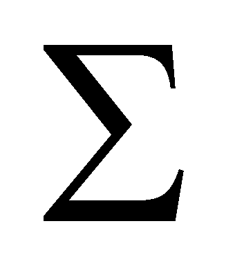

|
|
|
The objectual philosophy proposes an universal model for any material system, that is a model based on the notions which were already introduced in the previous chapters: distribution, object, process, flux and medium. Based on these notions, a new concept is defined, that is the real bounding surface, as a spatial zone placed between two abstract parallel and concentric surfaces, that is a zone where a gradual transition from a medium with a flux density to another medium with another flux density takes place. A RBS is different from an abstract surface by means of two main properties:
Permeability (transparence, transmittance) pk in case of a k-type flux is always sub unitary (pk1). The sub unitary transmittance of RBS makes that a flux which is incident on it, either from the inside or the outside, to not be entirely transmitted and to always exist a deflected (reflected) component of this flux.
Because RBS has a non-zero thickness, the tangential components of the incident, reflected or transmitted fluxes can be found on it.
The spatial distribution of RBS permeability allows their categorization into RBS with even or non-even spatial distribution, and as regards the temporal distribution, we may have RBS with even, non-even or periodical temporal distribution. In general, RBS have spatial-temporal distributions of the permeability, which are divided in two classes: RBS with deterministic distributions and stochastic RBS.
A MS is made-up from a closed RBS  which is the boundary between two complementary spaces - the inner one with volume V and the outer one. By using this RBS , we may define three flux classes (a triad):
Fluxes , open input fluxes through ;
Fluxes
 , fluxes closed into the inner volume V of the system;
, fluxes closed into the inner volume V of the system;
Fluxes , open output fluxes through .
There can be various types of fluxes which build-up a triad, based on the attribute (property) type which is carried by the flux, but they belong (in case of the abiotic MS) to two fundamental flux classes: structural fluxes (SF) and energy fluxes (EF); in case of the biotic MS and for some artificial MS, another basic flux class is added, that is the information fluxes (IF).
The total amount of N types of different fluxes, which are outward incident on RBS of a MS makes-up the set of the external influxes FEI. After the impact of these fluxes with RBS, other two flux sets occur - the set of the external refluxes {FER} and the set of the external trafluxes {FET}. On the inner side of RBS, there will be another triad of the flux sets: {FII} the set of the internal influxes, {FIR} the set of the internal refluxes and {FIT} the set of the internal trafluxes. The set {FEF} = {FER}{FIT}makes-up the set of efferent fluxes to MS. The fluxes which compose this set would not be able to exist if MS would not exist as well, and due to this reason, these fluxes are a basic indicator on the existence of that particular MS and of its materiality. The set {FEF} also determines the amount of fields produced by MS.
Because the fluxes
 are closed into the inner volume V of MS, any external traflux
of the same type as an existing internal flux, shall be composed
(vectorial summarization) with the internal flux, process which is
named the internal state change of MS. Once this change is
completed, the common attributes of the resulting flux shall
represent the external state change of MS. The temporal
interval which is required for this external state change is a
measure of the inertia property of MS, and the external state change
of a MS is called the action of that flux, referred to as
agent flux. The agent flux source is called the agent object
and MS subjected to the action exerted by the agent flux is referred
to as a driven object. We may say that an interaction
process occurs between two MS which deploy a mutual double and
simultaneous action process. If, as a result of this interaction
process, the inner attribute stock (transferred by fluxes) of the two
objects is maintained or is increased, that particular interaction is
constructive.
are closed into the inner volume V of MS, any external traflux
of the same type as an existing internal flux, shall be composed
(vectorial summarization) with the internal flux, process which is
named the internal state change of MS. Once this change is
completed, the common attributes of the resulting flux shall
represent the external state change of MS. The temporal
interval which is required for this external state change is a
measure of the inertia property of MS, and the external state change
of a MS is called the action of that flux, referred to as
agent flux. The agent flux source is called the agent object
and MS subjected to the action exerted by the agent flux is referred
to as a driven object. We may say that an interaction
process occurs between two MS which deploy a mutual double and
simultaneous action process. If, as a result of this interaction
process, the inner attribute stock (transferred by fluxes) of the two
objects is maintained or is increased, that particular interaction is
constructive.
The qualitative property of a MS of moving against a RS is called energy, and the energy quantity (stockpile) owned by that MS is given by a relation between the energy capacitance of a MS and an attribute of external energy state of MS.
Because the flux means a collective and specific motion process of a set of elementary objects, any material flux requires the existence of an energy distributed on the flux’s basic material objects. If the flux is coherent open, this distributed energy is a kinetic energy, whereas if the flux is totally closed into a finite volume, the distributed energy is an internal energy from that volume, and if the material flux is stochastic and motionless, the energy contained in that flux is referred to as potential energy.
The energy carried by a material flux, detached from the other properties of the carrier objects represents an energy flux (EF). The elementary energy amount contained by a material flux element is an energy quantum. There are some composition rules between the incident (agent) EF and EF stored inside the MS (reaction flux) which are applied at the impact of an EF with RBS of a MS:
EF composition takes place exclusively on a RBS;
RBS transmittance for EF can never be null;
Only the coherent and collinear components of the interactive EF are being composed;
The composition process of the interactive EF takes place until the depletion of the resources of one of the fluxes;
During the composition process, within the equilibrium state, the coherent equally and opposite fluxes can be converted (in some circumstances) either into stochastic fluxes or into closed coherent fluxes;
At the completion of the composition process, when the equilibrium state vanishes, the remanent stored flux can be converted (in some circumstances) into a coherent flux.
The abstract surface included into RBS volume, on which the agent and reaction flux have equal and opposite flux density vectors (FDV) is named equilibrium surface, and if this surface is motionless against an outer reference, the state of the two antagonist fluxes is an equilibrium state. The global variation of an EF incident on RBS of MS is called force, and the density by surface of this variation is called pressure. Under disequilibrium conditions occurred between the agent and reaction EF, the energy amount delivered by the agent EF to the driven system is proportional to the equilibrium surface displacement, and it is named mechanical work. The force which generates a mechanical work is an active force.
For achieving the natural formation and destruction of a MS, the objectual philosophy proposes the following laws:
A MS can be formed under environmental conditions which are favorable to this formation and it can be destroyed under unfavorable conditions of the same environment.
The material system is made-up for at least a partial coverage of the flux demand of its elements, by providing in this way the fulfillment of the flux demand of these elements under better conditions than the ones before the system formation, by means of a mutual flux delivery (import/export, re-circulation) between the elements.
The system’s global flux demand, from the outer space, shall be always less than the sum of the individual flux demands of its elements.
If an element of a MS receives fluxes from the outside which are more intense than the re-circulated fluxes, that element leaves the system.
The interaction between MS elements is always bilateral.
Any system made-up from MS is a MS.
Copyright © 2006-2011 Aurel Rusu. All rights reserved.